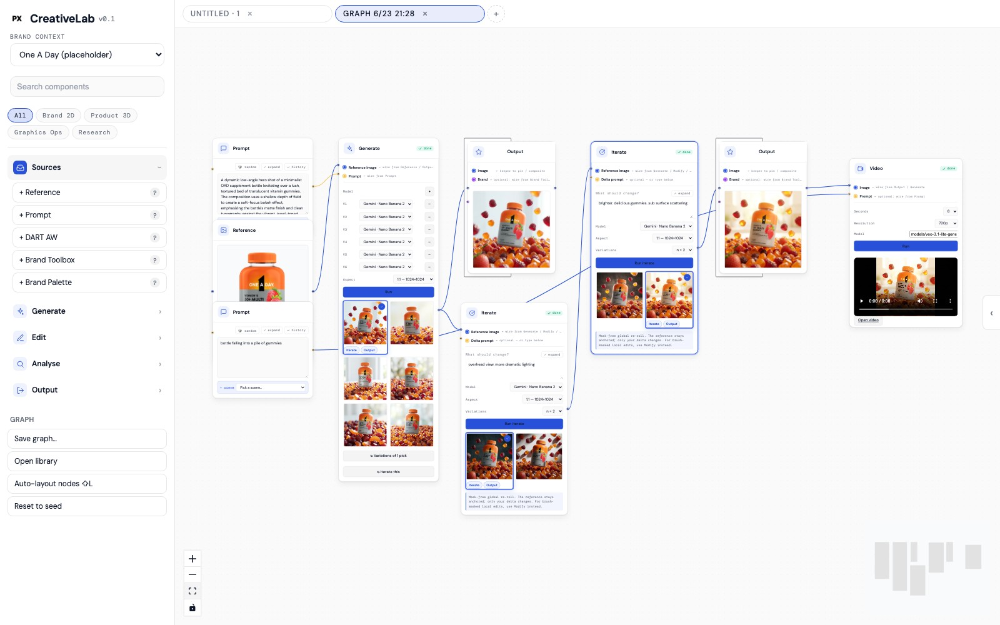
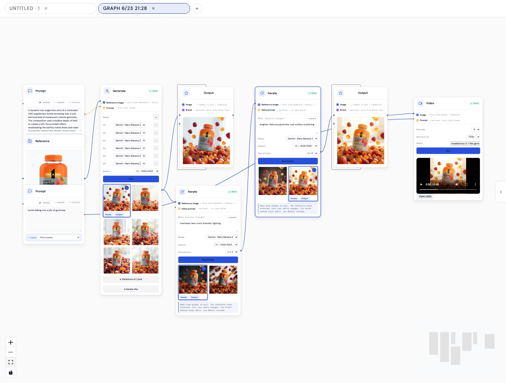
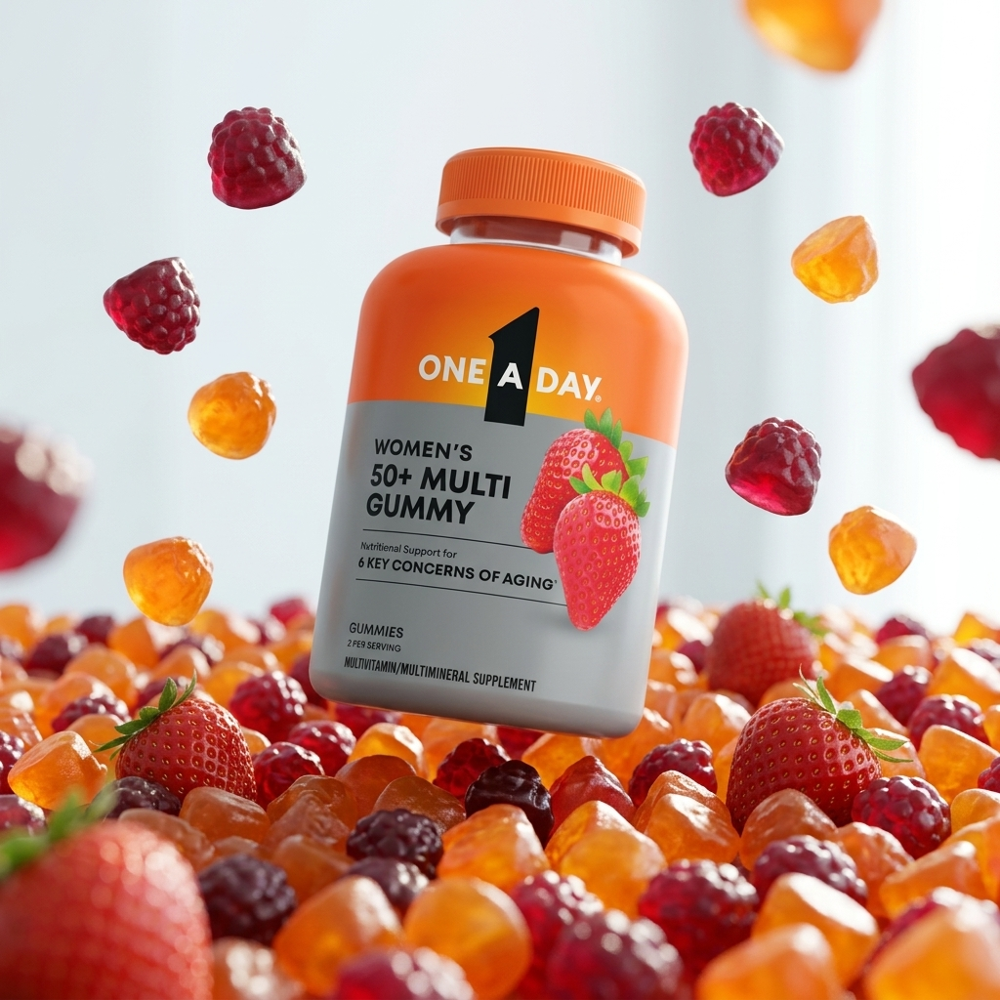
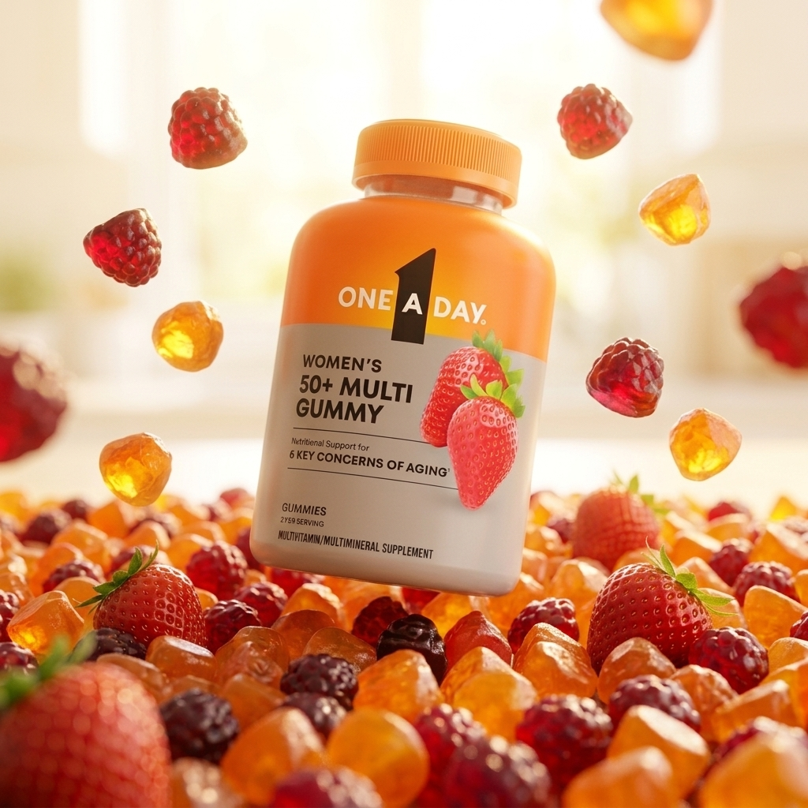
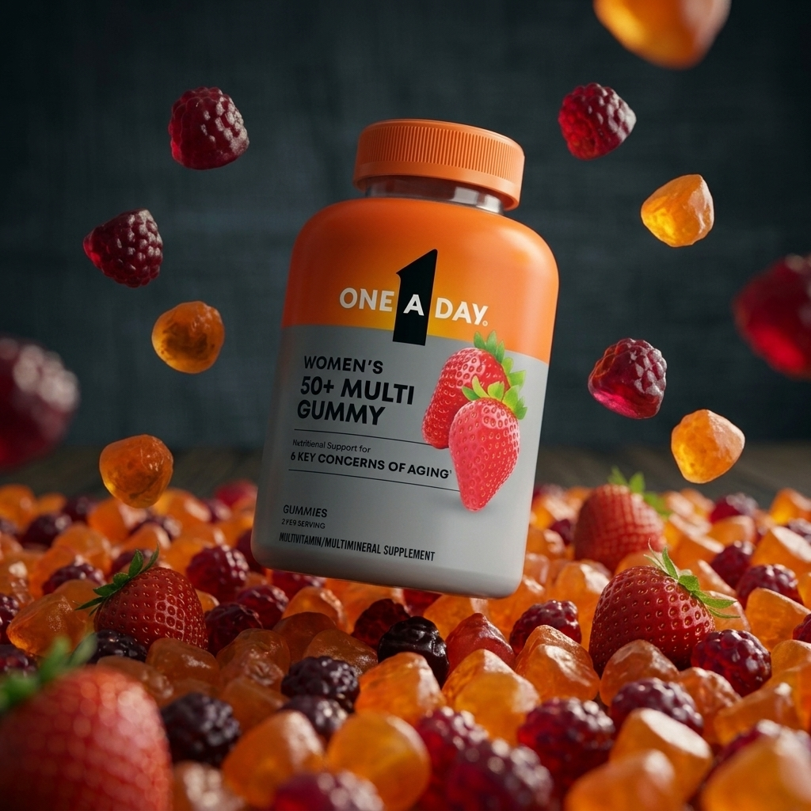
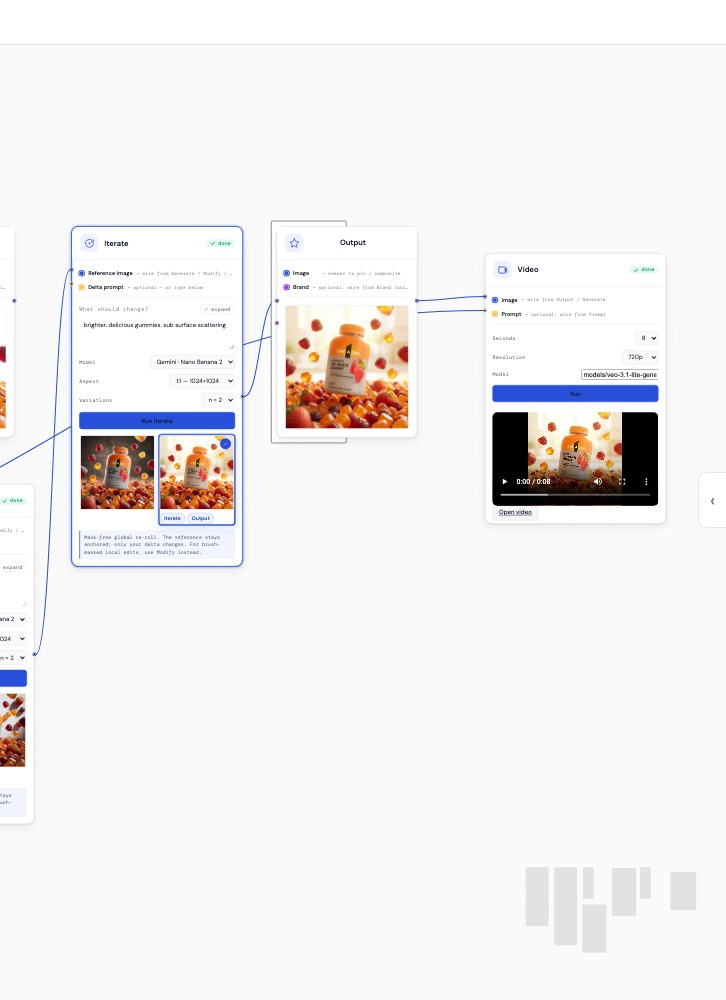
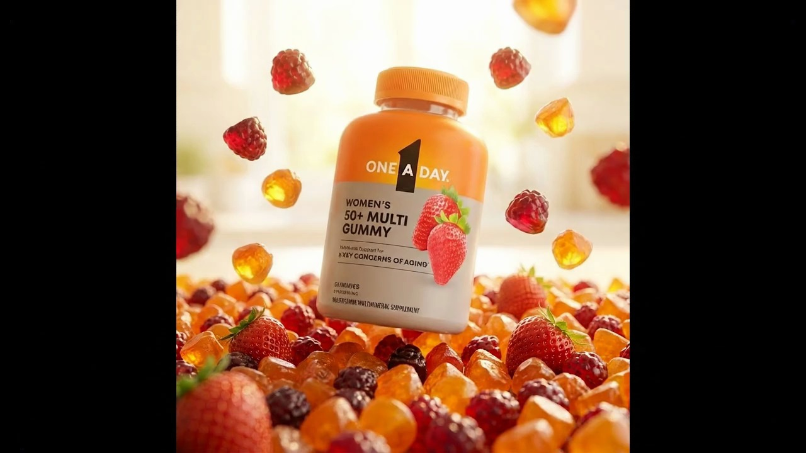
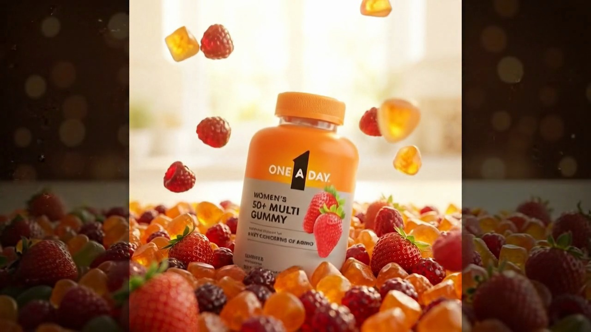
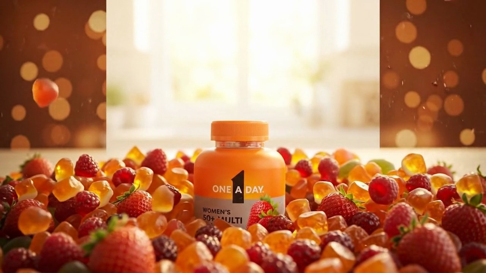
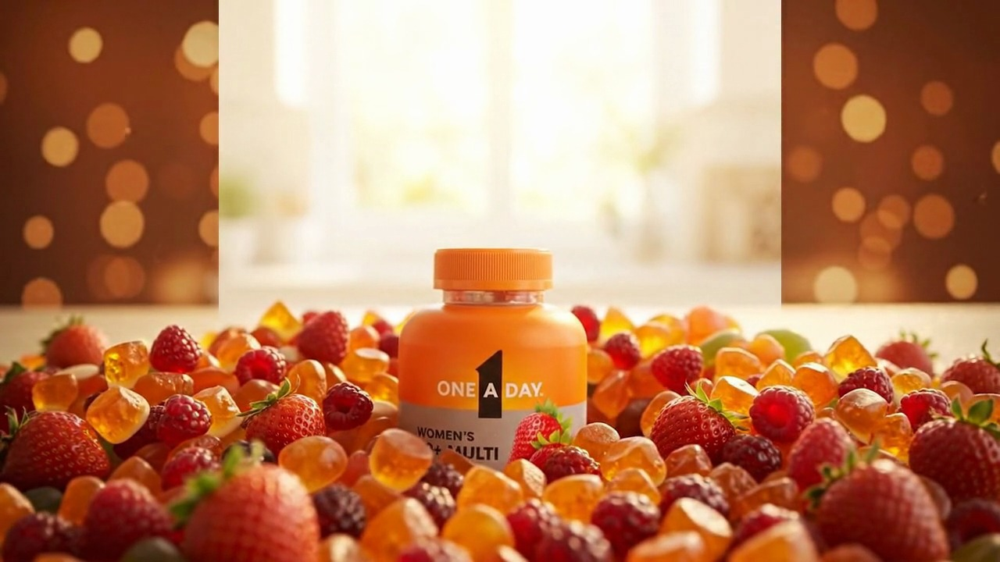

CreativeLab is a node-based tool I built in React that turns brand data — pack, palette, rules, channel specs — into channel-ready lifestyle imagery through Gemini and Veo. This is the part a gallery can't show: the problem I was actually solving, the dead ends, the architecture decision at the heart of it, and what it changed.

For the last seven years I've built brands across healthcare. The recurring bottleneck was never taste — it was volume against a compliance bar.
Take one launch. One A Day alone spans Women's, Men's, Kids, Prenatal, Teen, and 50+ — each in gummy and tablet, each needing lifestyle imagery for Amazon, retailer platforms, brand .com, social, print, and the trade-show booth. Multiply segment × format × channel and you're staring at hundreds of unique frames, every one of which has to be on-palette, on-pack, and legally clean before it ships.
The two ways to make those frames both broke at scale. A photoshoot is days of lead time and five figures per setup — you can't reshoot because a retailer wants a squarer crop. And the AI tools that were supposed to help were prompt boxes: type a paragraph, roll the dice, get something beautiful and slightly wrong. Change one word and the whole image changes. There was no way to hold the brand still while you moved one variable.
That was the real tension I set out to solve. Not “make images faster.” Make images fast while guaranteeing the brand survives the trip — and make the control legible enough that a designer, not an engineer, drives it.
The unlock was reframing what a designer should be touching. In a chat interface, the brand lives inside the prompt string — buried in prose, re-typed every time, impossible to hold constant. That's backwards. Brand isn't a sentence you write; it's the environment the work happens in.
So CreativeLab loads brand context once, at the top of the canvas — palette, pack references, a brand toolbox — and every node inherits it. What the designer actually manipulates is a graph: composable nodes wired together, each one a small, legible decision. Reference in. Generate. Look. Change one thing. Pin the keeper. Animate it.
Choosing a node graph over a chat box was the core design-technologist decision, and it wasn't cosmetic. A graph makes the pipeline visible and re-runnable. You can see where brand enters, where a choice was made, where the compliance check sits. You can swap a reference and re-run just the tail. It turns “generate an image” from a slot-machine pull into a wiring diagram a designer can reason about.

The honest part. My first pass was closer to everyone else's prompt box — and it broke on the one thing regulated brands can't compromise: the pack.
The generations were gorgeous and wrong. The model would render a beautiful scene and quietly mangle the label — “Nxtritional Support,” a garbled serving line, a logo lockup that drifted a few degrees off. In consumer healthcare, that's not a cute artifact; it's the thing legal rejects and the reason the whole approach gets thrown out. A tool that generates non-compliant packaging faster is worse than no tool.



Two failures taught me the architecture. First: a prompt string can't guarantee a pack. That pushed pack and brand rules out of the prose and into structured reference inputs the model treats as fixed — and it's why the real pipeline ends on an Output node where the compliance check lives, not on whatever the model happened to spit out.
Second: re-rolling changed everything at once. Nudge the lighting and you'd lose the composition you liked. So the Iterate node became a mask-free global re-roll that keeps the reference anchored and applies only the delta — keep everything, change one thing. For tighter work, a Modify path does brush-masked local edits. That single behavior — deltas over re-rolls — is what turned the tool from a slot machine into an instrument.
I cut a lot to get there: a freeform chat mode, a “surprise me” button, an early auto-compositor that fought the designer. None of them respected the real constraint. The tool got smaller and sharper the more I understood the failure.
Once a still is pinned and clean, the designer wires it into a Video node — Veo, eight seconds, 720p — and the frame animates. No handoff to a motion team, no re-briefing, no losing the brand between tools. The chain that started at a pack reference ends as a moving shot, all inside one graph, in minutes.





The headline is honest and it's the one that matters: a brand-compliant lifestyle frame that used to take days of shoot-or-source now takes minutes on the canvas.
Beyond speed, two things mattered more for how the work read. It stayed on-brand by construction — brand context is the environment, and the compliance check is a node, so “fast” never meant “off-brief.” And it was legible enough to hand off: I taught the practice to my team in a talk called “AI for Designers,” and designers — not engineers — could wire graphs themselves. The same pipeline that made a single hero also produced One A Day's NACDS 2026 booth panels and close-up heroes.
I'm deliberately not inflating this. The win isn't a made-up multiplier; it's that a regulated brand got a repeatable, compliant, designer-driven way to make lifestyle imagery at the volume the digital shelf actually demands.
Right now the compliance check is a discipline at the Output stage. The next version makes it a real node with brand rules encoded — palette tolerances, logo geometry, required legal copy — that flags a frame before a human has to catch a mangled label. The tool should know its own brand bar.
A wired graph is institutional knowledge. If a great “kitchen hero” pipeline could be saved and handed to a teammate as a starting point — brand context and all — the tool becomes a way a team accumulates craft, not just a faster way to render.
The most interesting direction: the graph itself becomes the deliverable a stakeholder reviews. Instead of approving 200 finished frames, you approve the pipeline — and trust it to run. That's a different relationship between design, review, and generation, and it's the one I'd want to keep pulling on.
AI is just the newest material on my bench. The instinct that pulled me from graphite to oil to clay to 3D pulls me here — and increasingly, to building the tool that makes the work.